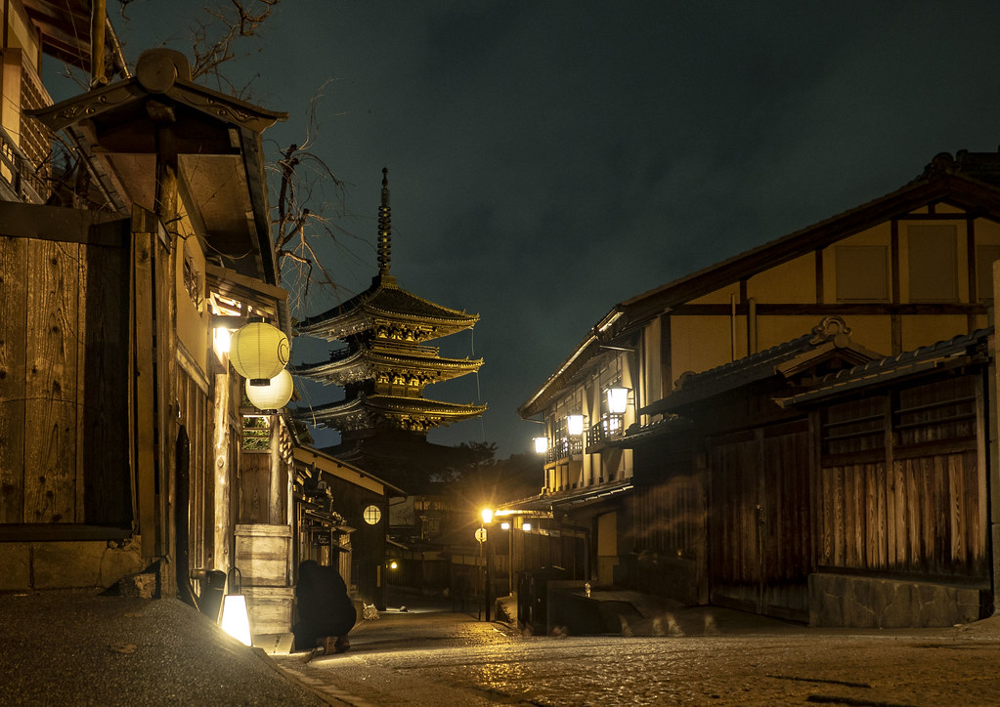
Kyoto
Cố đô của Gion Matsuri tháng 7 và đoàn rước Jidai Matsuri mùa thu.
Lễ hội ở KyotoChạm vào văn hóa Nhật Bản qua từng mùa lễ hội
Theo dấu đèn lồng, xe rước và pháo hoa qua bốn mùa, từ phố cổ Kyoto đến công viên tuyết Sapporo.
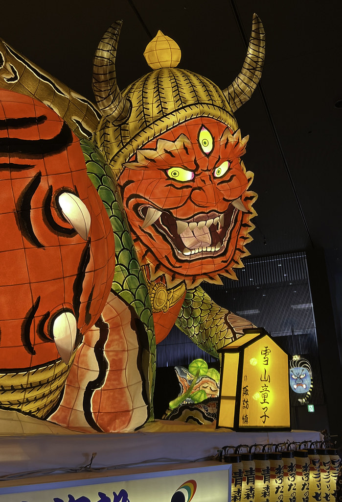
Bốn lễ hội mở đầu cho hành trình: rước xe giữa cố đô, đèn lồng khổng lồ, điệu múa Obon và thành phố tuyết.
Mỗi mùa ở Nhật Bản mang một nhịp lễ hội riêng. Chọn mùa bạn định đi để xem những lễ hội đang chờ.
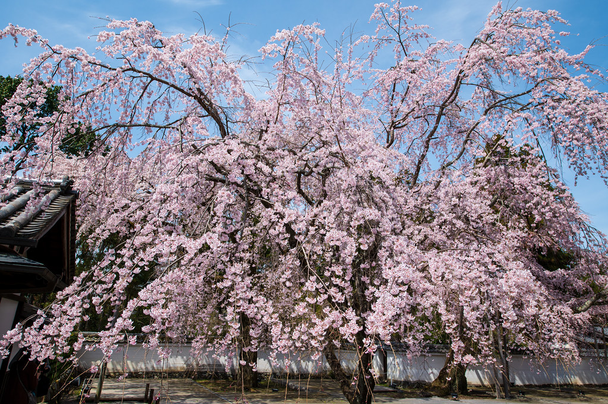
Thường từ tháng 3 đến tháng 5
Người Nhật trải bạt dưới tán hoa, cùng ăn uống và ngắm mùa xuân ngắn ngủi. Ở miền bắc, hoa nở muộn hơn và kéo dài sang đầu tháng 5.
Lễ hội mùa Xuân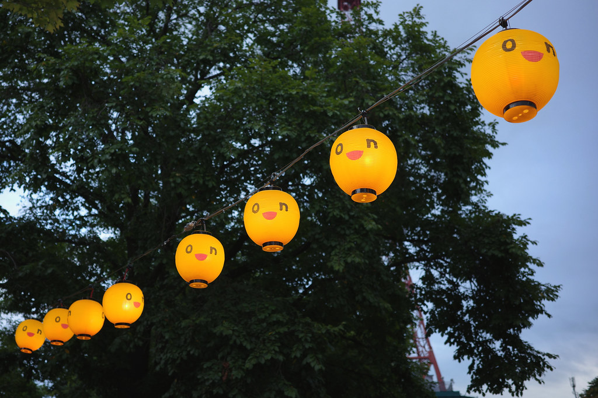
Thường từ tháng 6 đến tháng 8
Mùa hè dày đặc lễ hội: xe rước, đèn lồng, điệu múa Obon và những đêm pháo hoa bên sông.
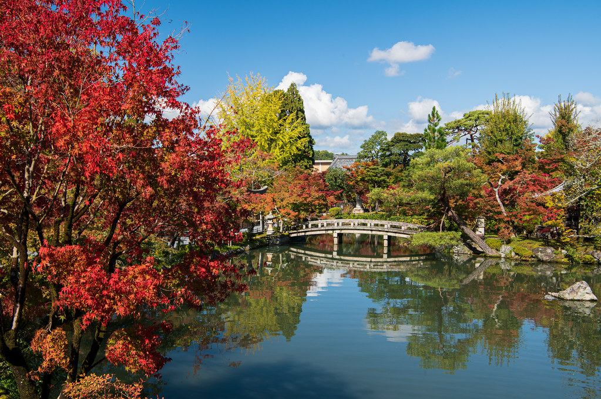
Thường từ tháng 9 đến tháng 11
Trời dịu lại, các đền tổ chức lễ hội mùa thu với xe rước chạm khắc và đoàn trang phục cổ.
Lễ hội mùa Thu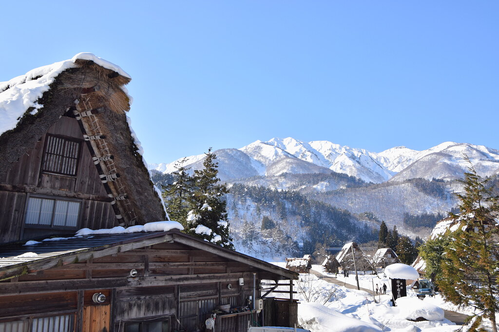
Thường từ tháng 12 đến tháng 2
Miền bắc phủ tuyết trắng, các thành phố biến mùa đông dài thành lễ hội tượng tuyết và đèn chiếu.
Lễ hội mùa ĐôngLễ hội không chỉ để ngắm. Đây là những cách du khách có thể hòa vào không khí cùng người dân địa phương.
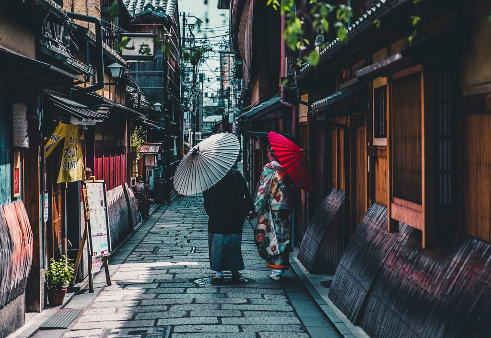
Áo cotton nhẹ mùa hè, thường được mặc khi đi lễ hội hay xem pháo hoa. Nhiều nơi cho thuê theo ngày.
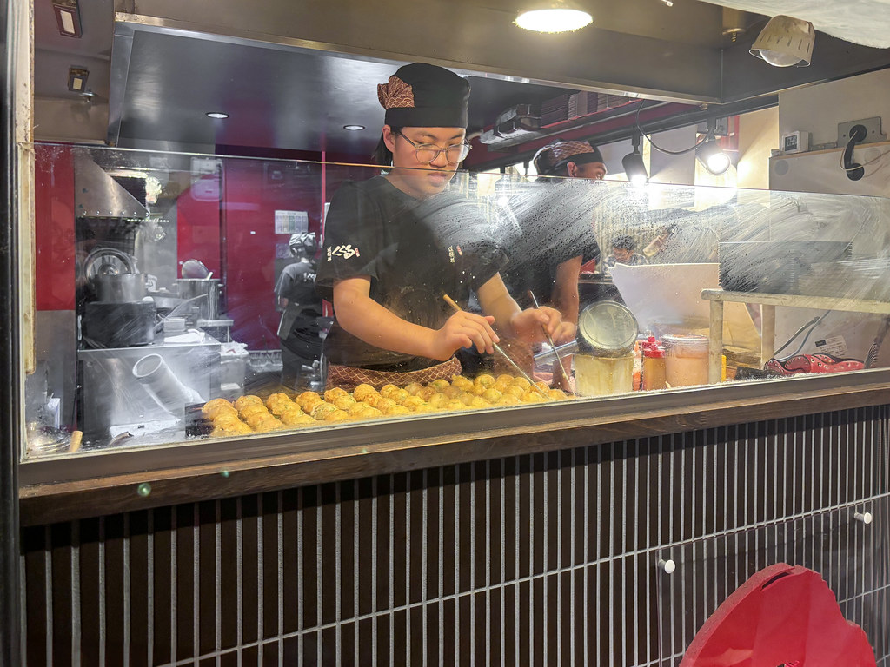
Takoyaki, yakisoba, kem đá bào ở các quầy yatai.
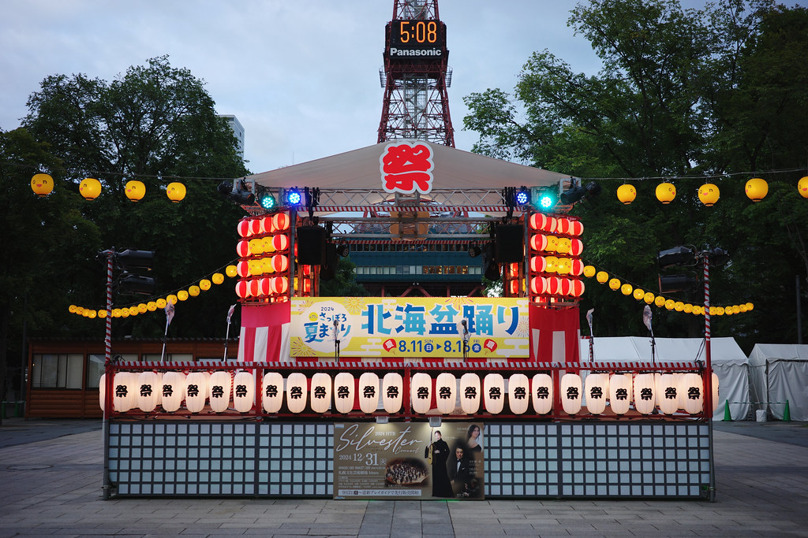
Vòng múa Bon Odori luôn mở cho người mới.
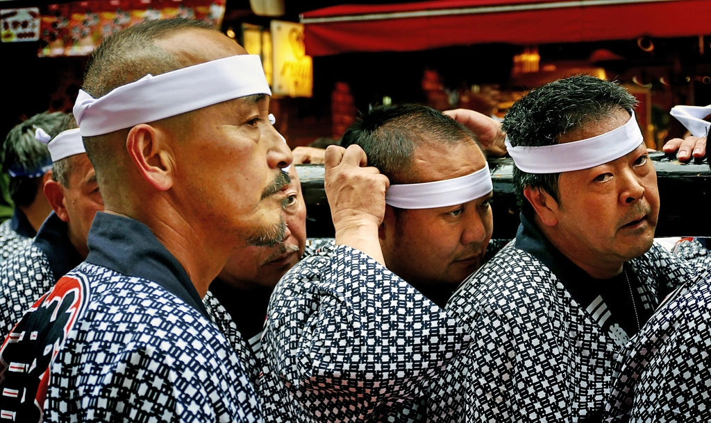
Kiệu thần và xe rước đi qua từng khu phố.
Hanabi, nét riêng của đêm hè Nhật Bản.
“Chạm vào văn hóa Nhật Bản qua từng mùa lễ hội.”
JAPAN MATSURI là cẩm nang giới thiệu các lễ hội truyền thống Nhật Bản dành cho du khách Việt. Chúng tôi kể về lễ hội qua con người, nghề thủ công và nhịp sống của từng vùng, thay vì chỉ liệt kê điểm đến.
Mỗi trang lễ hội gồm câu chuyện, điểm nổi bật, trải nghiệm dành cho du khách và thông tin chuyến đi. Thời gian luôn ghi là "thời gian thường tổ chức"; hãy kiểm tra lịch chính thức của năm bạn đi.
Từ đảo Shikoku ấm áp đến Hokkaido tuyết trắng, mỗi vùng có lễ hội mang dấu ấn riêng.

Cố đô của Gion Matsuri tháng 7 và đoàn rước Jidai Matsuri mùa thu.
Lễ hội ở Kyoto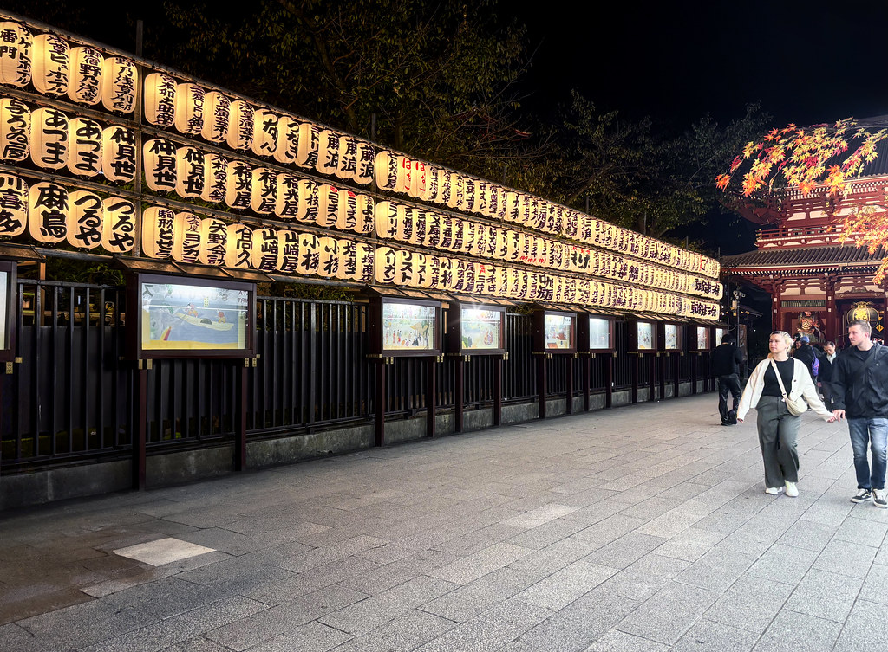
Thủ đô sôi động, nơi pháo hoa sông Sumida mở màn mùa hè quanh Asakusa.
Lễ hội ở Tokyo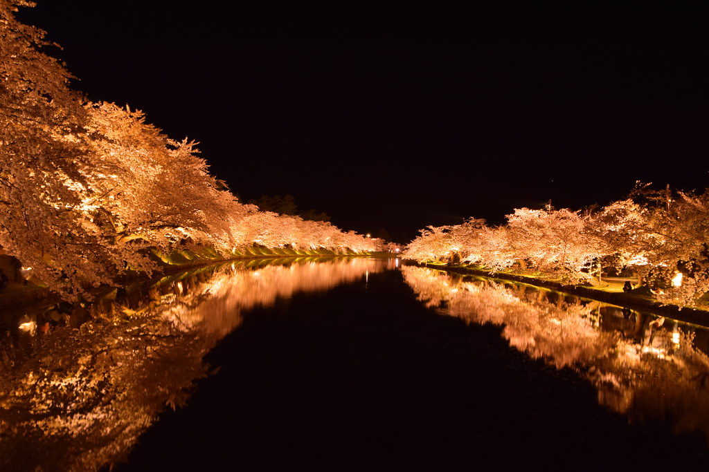
Miền bắc Honshu của xe đèn Nebuta và rừng anh đào lâu đài Hirosaki.
Lễ hội ở AomoriQuê hương điệu múa Awa Odori trên đảo Shikoku, gần eo biển Naruto.
Lễ hội ở Tokushima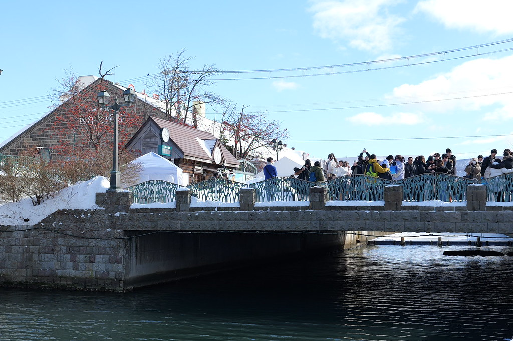
Hòn đảo cực bắc với mùa đông tuyết trắng và lễ hội tuyết Sapporo.
Lễ hội ở Hokkaido